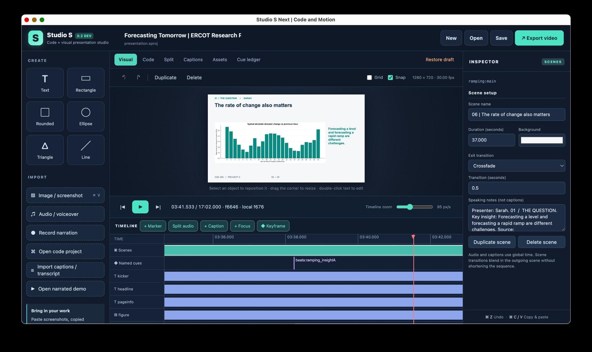
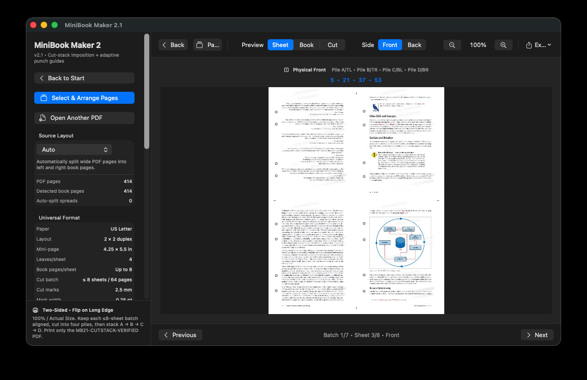

Independent exploration
Personal projects.
Tools and experiments driven by curiosity, making, and the desire to turn ideas into working systems.
These projects continue to evolve outside the classroom.

Personal project · Creative software
Studio S — Code-Driven Presentation Studio
I am developing a desktop presentation editor that coordinates code-defined scenes, visuals, narration, captions, and a shared timeline.
Active prototype developmentView project ↗

Personal project · Creative publishing
Mini Bookmaker
I built a desktop tool for rearranging PDF pages into printable miniature books, with sheet previews, page selection, and print-ready layouts.
Working prototype · v2.1View project ↗
THE COMPLETE COLLECTION